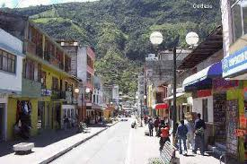

(París, 1892- id., 1986) Constructor de aviones francés. Su nombre auténtico era Marcel Bloch, pero cambió su apellido inspirándose en el seudónimo utilizado por su hermano Paul (Char d'Assault) cuando luchaba en la Resistencia, contra la ocupación alemana. Propietario de una empresa de construcciones aeronáuticas (1935), tras haber sufrido deportación en la II Guerra Mundial, desarrolló diversas actividades empresariales, como la dirección de la Société anonyme des avions Marcel Dassault-Breguet-Aviation. Entre los principales modelos fabricados destacan los Mirage. Ocupó varios cargos políticos y prestó gran apoyo económico a De Gaulle.
Baños de Agua Santa
Octubre 2 del 2018 Latitud: 2º 55' S. Longitud: 79º 04' O.
Ubicada en un valle de cascadas y manantiales de aguas termales, Baños se ha convertido en una suerte de Meca para los turistas internacionales que buscan climas templados en los Andes. Con su cercanía a Quito, su atmósfera pueblerina y una situación geográfica privilegiada que le permite servir de base para incursiones a los parajes naturales que la rodean, Baños ofrece a sus visitantes un amplio rango de opciones turísticas: aguas termales, cabalgatas, caminatas, rafting, ascensiones, y ciclismo de montaña, entre otras. También ofrece un accesos fácil y rápido hacia distintos como: Riobamba, (desde donde sale el ferrocarril hacia la Nariz del Diablo); la Costa y Puyo, en el Oriente. Baños es, literalmente, una puerta abierta hacia el Oriente ecuatoriano. Los amantes de las actividades al aire libre podrán encontrar en las montañas que rodean a Baños, una gran red de senderos espectaculares. Entre ellos, la media hora de caminata hasta el monumento de la Virgen o la cabalgata hasta la Cascada. Otro de los muchos senderos en los alrededores de Baños, cercano a la terminal de buses y que cruza el río Pastaza, es particularmente agradable, pero tiene una subida bastante intensa. También el ciclismo se ha vuelto muy popular en Baños, especialmente el rentar una bicicleta para recorrer los 40 km que montaña abajo llevan hasta la ciudad amazónica de Puyo. Esta vía, recientemente repavimentada, se ha vuelto más transitada por autos y camiones, por lo que recomendamos tomar muchas precauciones, ya que tradicionalmente los conductores ecuatorianos no tienen mucho respeto por los ciclistas.